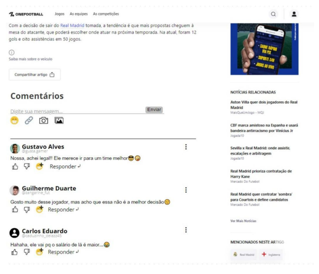

Sobre mim
Olá! Meu nome é Carlos Eduardo Cardoso Barreiros, tenho 20 anos e sou estudante de Ciência da Computação
na Universidade Anhembi Morumbi (conclusão prevista para dez/2026). Atualmente, atuo como Administrador
de Banco de Dados Júnior na Sintel Brasil, trabalhando com ambientes produtivos em SQL Server e
PostgreSQL (on-premise e AWS Aurora).
No dia a dia, atuo com análise e otimização de performance, automação de rotinas, gestão de backups e
restores e monitoramento de sistemas de missão crítica. Também participo da modelagem de dados e do
desenvolvimento de soluções em banco, sempre buscando eficiência, confiabilidade e escalabilidade.
Tenho como principal diferencial a busca constante por automação e melhoria contínua, desenvolvendo
soluções que reduzem erros manuais, aumentam a eficiência operacional e geram impacto direto no
ambiente. Além disso, colaboro com equipes de desenvolvimento na construção e otimização de procedures,
functions e queries, garantindo uma integração eficiente entre aplicações e banco de dados.
Antes da tecnologia, vivi uma experiência como jogador de futebol profissional na Alemanha, onde
desenvolvi disciplina, resiliência, trabalho em equipe e adaptação a ambientes desafiadores, além de
consolidar meu inglês.
Tenho grande interesse em Engenharia de Dados e Inteligência Artificial aplicada a dados, áreas nas
quais venho me aprofundando continuamente. Busco evoluir na construção de soluções de dados escaláveis,
desde a modelagem e processamento até a disponibilização para análise, utilizando tecnologias modernas e
boas práticas de engenharia. Acredito no potencial dos dados para gerar impacto real, promovendo
eficiência, escalabilidade e melhores tomadas de decisão nas organizações.
Habilidades técnicas
Bancos de Dados
SQL Server · PostgreSQL · MySQL · Amazon Aurora · Oracle
Desenvolvimento
SQL · Python · PowerShell
Cloud & Infraestrutura
AWS · Microsoft Azure
Dados & Engenharia
Modelagem de Dados · Performance Tuning · ETL
Sistemas Operacionais
Windows · Linux
Projetos
Melhoria para OneFootball
Este também é um projeto de faculdade, mas de natureza
mais teórica. Envolveu a modelagem de uma melhoria para o aplicativo OneFootball,
especificamente a
criação de uma área de comunidade no aplicativo onde os usuários pudessem interagir com o
conteúdo
de notícias. O foco principal de desenvolvimento deste projeto foi a Modelagem de Dados, com
utilização de UML (Unified Modeling
Language),
para os diagramas e Engenharia de requisitos, para as implementações.
tecnologias usadas: UML and Engenharia de Requisitos

Aplicação CRUD
Aplicação web completa que simula um
sistema de cadastro e gerenciamento de usuários, desenvolvido como desafio pessoal para
aprofundar conhecimentos em desenvolvimento full-stack. O sistema permite que os usuários façam
seu cadastro e login, visualizem suas informações e excluam suas contas. Para moderadores, há um
painel com funcionalidades de controle completo sobre os usuários, incluindo cadastro, edição e
exclusão.
tecnologias usadas: React, CSS Tailwind, Node.js, Express e MySQL
Contatos
-

+55 11 95039-4818
-

cadu1117@hotmail.com
-

Carlos Eduardo Cardoso Barreiros
-

São Paulo, BRASIL